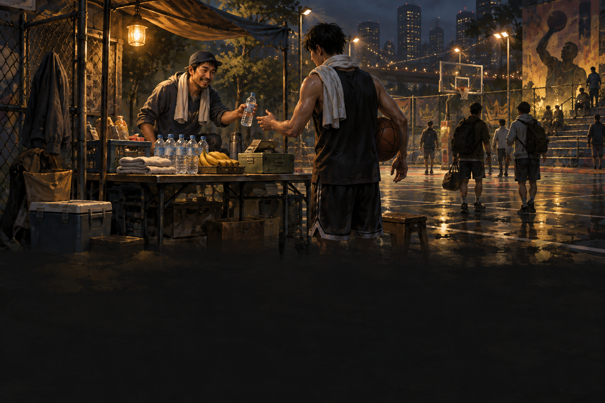

随机事件 · 设计预览
2026-10-09 · 图鉴与事件系统尚未接入游戏。图中 7 / 28 为设计示例。点击图片查看原图。
事件图鉴：三种方案
事件实际出现即点亮；未触发事件统一灰色问号，不展示名称、故事、条件、收益或背景图。建议采用 A 的双列卡片，搭配 C 的只读详情。
七张事件背景图
统一夜间球场、炭黑与暖金插画；下方暗部用于叠加故事和选项。人物事件包含对应球员的训练影像或壁画元素。
T01 弧顶一千球 · 库里
T02 碰撞后的第一步 · 詹姆斯
C01 夜场擂台 · 乔丹

P01 球场补给摊
P05 重写败局
R01 场边急救包
X01 旧球场教学带完整生成提示词：prompts.json。使用内置 image_gen 工具生成。